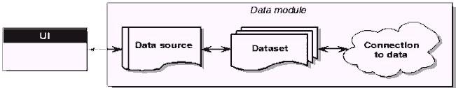

Kylix Tutorial. Часть 2. Работа с базами данных через dbExpress
Фирма Borland в Kylix и Delphi 6 реализовала новый движок для работы с базой данных dbExpress. Данный движок предназначен для работы с серверными БД. На сегодняшний день поддерживаются MySQL, Oracle, Interbase, DB2. К сожалению, на момент выпуска Kylix он работал не со всеми версиями MySQL. В частности, он не заработал с MySQL 3.23.22-beta. За неимением Oracle и DB2 я пользовался Interbase 6, находившемся на втором диске дистрибутива.
Архитектура доступа к данным
В самом виде приложение для работы с базами данных может быть представлено в следующем виде:
Ничего принципиально нового здесь нет, по сравнению с Delphi. Но это только на первый взгляд. В dbExpress датасеты делятся на два вида:
1. Клиентский датасет (client dataset)
2. Однонаправленные датасеты (unidirectional dataset)
Клиентский датасет хранит выбранные записи в памяти. Это позволяет осуществлять навигацию в любом направлении, фильтровать записи, кешировать изменения итд. Именно данный вид используется для отображения данных пользователю.
Однонаправленные запросы не кешируют данные. Передвигаться по ним можно только в направлении указанном в конструкции ORDER BY SQL запроса, данные не могут быть изменены. Однако они предоставляют быстрый доступ к большим массивам записей.
Компоненты закладки dbExpress
Посмотрим, что приготовила нам фирма Borland по части компонентов на закладке dbExpress
| Свойства | Описание |
| SQLConnection | |
| Компонент для организации связи с сервером базы данных. Аналог Database в BDE. Позволяет управлять параметрами соединения с сервером БД, такие как путь к базе данных, имя и пароль пользователя итд. | |
| Connected:boolean | Признак установления соединения с БД. True - соединение активно. |
| ConnectionName: string | Имя конфигурации, содержащей параметры соединения. Аналог AliasName в TDatabase для BDE |
| DriverName: string | Имя драйвера для соединения. (DB2, Interbase,Oracle, MySQL). Устанавливается автоматически при установке св-ва ConnectionName |
| KeepConnection: boolean | Поддерживать соединение с сервером БД, если в приложении нет активизированных датасетов. |
| LibraryName: string | Имя библиотеки, содержащей драйвер для связи с сервером БД |
| LoadParamsOnConnect: boolean | Загружать ли параметры соединения, ассоциированные с именем соединения, перед установкой соединения в run time. Полезно в случае когда параметры соединения могут быть изменены вне приложения или меняются в design time |
| LoginPrompt: Boolean | Запрашивать логин и пароль при соединении |
| Name: TComponentName | Имя компонента |
| Params: TStrings | Параметры соединения |
| TableScope: TTableScopes | Параметры видимости таблиц TsSynonym - видеть синонимы TsSysTable - видеть системные таблицы TsTable - видеть таблицы TsView - видеть просмотры |
| VendorLib: string | Имя библиотеки с клиентской частью БД |
| SQLDataSet | |
| Однонаправленный датасет общего назначения. | |
| Active: boolean | Активность датасета |
| CommandText: string | Текст команды (запроса) на получение или манипуляции с данными |
| CommandType: TSQLCommandType | Тип датасета CtQuery - SQL запрос CtTable - таблица, автоматически генерируется запрос на выборку всех записей по всем полям CtStoredProc - хранимая процедура |
| DataSource: TDataSource | Источник данных для мастер датасета |
| MaxBlobSize: integer | Максимальный размер BLOB полей |
| ObjectView: Boolean | Включить иерархическое представление для вложенных полей |
| ParamCheck:Boolean | Обновлять список параметров при изменении текста команды |
| Params:Tparams | Список параметров команды |
| SortFieldNames: string | Список полей для сортировки датасета, поля разделяются точкой с запятой. Действует для CommandType ctTable |
| SQLConnection: TSQLConnection | Имя компонента SQLConnection через который будет происходить работа с БД |
| Tag: integer | Тэг |
| SQLQuery | |
| Запрос к БД (однонаправленный) | |
| Active: boolean | Активность запроса |
| DataSource: TDataSource | Источник данных для мастер датасета |
| MaxBlobSize: integer | Максимальный размер BLOB полей |
| ObjectView: Boolean | Включить иерархическое представление для вложенных полей |
| ParamCheck:Boolean | Обновлять список параметров при изменении текста запроса |
| Params:Tparams | Список параметров запроса |
| SQL:TStrings | Текст запроса |
| SQLConnection: TSQLConnection | Имя компонента SQLConnection через который будет происходить работа с БД |
| Tag: integer | Тэг |
| SQLStoredProc | |
| Хранимая процедура (в случае получения данных однонаправленная) | |
| Active: boolean | Активность хранимой процедуры |
| MaxBlobSize: integer | Максимальный размер BLOB полей |
| ObjectView: Boolean | Включить иерархическое представление для вложенных полей |
| ParamCheck:Boolean | Обновлять список параметров при изменении процедуры |
| Params:Tparams | Список параметров процедуры |
| SQLConnection: TSQLConnection | Имя компонента SQLConnection через который будет происходить работа с БД |
| Tag: integer | Тэг |
| SQLTable | |
| Таблица базы данных (однонаправленный датасет) | |
| Active: boolean | Активность таблицы |
| IndexFieldNames: string | Список полей сортировки (через точку с запятой) |
| IndexName: string | Имя индекса сортировки. Возможно использование либо IndexName или IndexFieldNames |
| MasterSource: TdataSource | Мастер источник данных для организации отношений главный-подчиненный (master-detail) |
| MasterFields:string | Поля связи главный-подчиненный |
| MaxBlobSize: integer | Максимальный размер BLOB полей |
| ObjectView: Boolean | Включить иерархическое представление для вложенных полей |
| SQLConnection: TSQLConnection | Имя компонента SQLConnection через который будет происходить работа с БД |
| TableName: string | Имя таблицы БД из которой будут выбраны данные |
| Tag: integer | Тэг |
| SQLMonitor | |
| Организация наблюдения за работой компонентов доступа к данным | |
| Active: boolean | Активность монитора |
| AutoSave: Boolean | Автоматическое сохранения журнала событий в файл, указанный в FileName |
| FileName: string | Имя файла для хранения журнала событий |
| SQLConnection: TSQLConnection | Имя компонента SQLConnection через который будет происходить работа с БД |
| Tag: integer | Тэг |
| TraceList:Tstrings | Журнал событий |
| SQLClientDataSet | |
| Клиентский датасет общего назначения | |
| Active: boolean | Активность датасета |
| Aggregates: Taggregates | Список доступных агрегатов |
| AggregatesActive: boolean | Вычисление агрегатов |
| AutoCalcFields: boolean | Генерировать событие OnCalcFields и обновлять Lookup поля True - · при открытии датасета · при переходе датасета в состояни dsEdit · Передача фокуса ввода другому компоненту или другому столбцу (для сетки) при наличии изменений в текущей ячейке False · при открытии датасета · при переходе датасета в состояни dsEdit · Запись извлекается из БД |
| CommandText: string | Текст команды для выполнения (SQL запрос). При установке св-ва FileName данное св-во игнорируется При сбросе флага poAllowCommandText в св-ве Options также текст команды игнорируется |
| CommandType: TSQLCommandType | Тип датасета CtQuery - SQL запрос CtTable - таблица, автоматически генерируется запрос на выборку всех записей по всем полям CtStoredProc - хранимая процедура |
| ConnectionName: string | Имя конфигурации, содержащей параметры соединения. Аналог AliasName в TDatabase для BDE |
| Constraints: TConstraints | Ограничения на значения на уровне одной записи |
| DBConnection: TSQLConnection | Имя компонента SQLConnection через который будет происходить работа с БД |
| DisableStringTrim: boolean | Удалять конечные пробелы в строковых полях при их вставке БД |
| FetchOnDemand: boolean | Получать данные по мере необходимости |
| FieldDefs: TFieldDefs | Определения полей |
| FileName: string | Имя файла для сохранения кеша данных |
| Filter: string | Фильтр |
| Filtered: Boolean | Включение фильтрации |
| FilterOptions: TFilterOptions | Параметры фильтрации |
| IndexDefs: TindexDefs | Определения индексов |
| IndexFieldNames: string | Список полей сортировки (через точку с запятой) |
| IndexName: string | Имя индекса сортировки. Возможно использование либо IndexName либо IndexFieldNames |
| MasterSource: TdataSource | Мастер источник данных для организации отношений главный-подчиненный (master-detail) |
| MasterFields:string | Поля связи главный-подчиненный |
| ObjectView: Boolean | Включить иерархическое представление для вложенных полей |
| Options: TProviderOptions | Параметры работы с данными |
| PacketRecord: integer | Количество записей в одном пакете данных -1 - все >0 - количество 0 - включать в пакет только метаданные |
| Params: Tparams | Значение параметров для выборки данных |
| ReadOnly: Boolean | Доступ только для чтения |
| Tag: integer | Тэг |
| UpdateMode: TUpdateMode | Способ поиска записи при записи изменений UpWhereAll - использовать все поля UpWhereChanged - ключевые поля+старые значения измененных полей UpWhereKeyOnly - только ключевые поля |
Попробуем написать простейшее приложение для просмотра данных из базы в /usr/ibdb (будем считать что папка уже создана). Для этого выполним следующие шаги:
1. Создадим базу данных в Interbase 6. У меня он проинсталировался в /opt/interbase .
1.1 Запустим сервер /opt/interbase/bin/ibguard &
1.2 Войдем в оболочку isql - /opt/interbase/bin/isql
1.3 Введем SQL запросы на создание БД и таблицы users:
create database '/usr/ibdb/test.gdb'; create table users( ID integer not null primary key, NAME varchar(20)); commit; quit;
Если все выполнено правильно - то в папке /usr/ibdb появится файл test.gdb.
2. Создадим новое приложение. Меню File/NewApplication в IDE Kylix
3. На главной форме приложения разместим с закладки dbExpress компоненты: SQLConnection и SQLDataSet. SQLConnection - это "соедиение" с базой данных, т.е с его помощью можно управлять параметрами соединения, такими как тип драйвера, имя пользователя и пароль. Двойной щелчок левой кнопкой мыши на SQLConnection1 вызовет окно работы с соединениями.
Name - test_connect. После добавления установим следующие параметры:
Database - /usr/ibdb/test.gdb
ServerCharSet - win1251
Кнопкой "ОК" закроем диалог. Свойство Connected установим в True. В диалоге запроса пароля введем пароль masterkey. Соединение установлено.
Компонент SQLClientDataSet1 будет извлекать данные из таблицы users. Почему мы используем его а не SQLQuery? Ответ очень прост - SQLQuery - однонаправленный датасет. Поэтому он не может обеспечить навигации в обе стороны и редактирование данных.
Свойство DBConnection компонента SQLClientDataSet1 установим равным SQLConnection1. Введем запрос на выборку данных из таблицы users - select * from users - в св-во CommandText, либо воспользуемся диалогом для данного св-ва. Активизируем запрос, установив св-во Active в True.
Далее с закладки Data Access на форму положим компонент TDataSource. Данный компонент делает данные из датасетов доступными для отображения в пользовательских элементах управления (сетках итд). Его св-во DataSet установим в ClientDataSet1.
Перейдем на закладку DataControls и с нее разместим на форме сетку данных DBGrid и DBNavigator. Для обоих компонентов св-во DataSource установим в DataSource1. При этом в DBGrid1 появится заголовок с наименованиями полей таблицы users.
Теперь можно запустить приложение на выполнение (F9 однака).
Взято с сайта http://www.delphimaster.ru/
с разрешения автора.